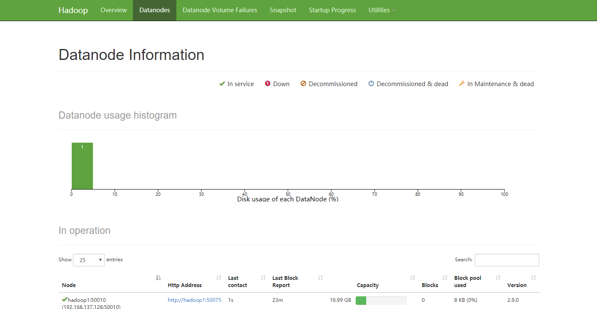
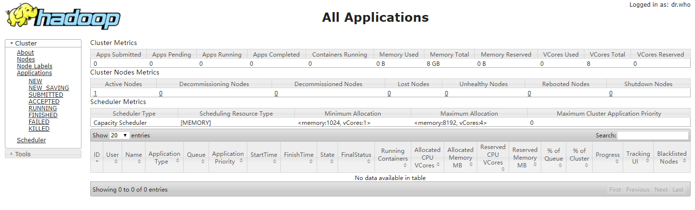

hadoop安装及伪分布式配置
Centos7（VMware）中安装配置hadoop
环境：
win10下VMware虚拟机CentOS 7系统
准备工作:
- 修改主机名
vi /etc/hostname hadoop1 - 下载jdk,本次安装的hadoop版本为2.9，需要jdk7或以上。
- 下载hadoop笔者下载的是2.9版本。
- 下载完成将jdk与hadoop压缩包通过ftp工具放入虚拟机/usr/local目录中
安装jdk
- Hadoop的编译及MapReduce的运行都需要使用JDK
rpm -ivh /usr/local/jdk-8u171-linux-x64.rpm默认安装到/usr/java/下
-i install;-h (or –hash) 安装时输出hash记号 (“#”) ;-v 显示附加信息配置环境变量
vi /etc/profile打开profile文件在文件最后添加如下内容：
1
2
3
4#set Java Environment
export JAVA_HOME=/usr/java/jdk1.8.0_171-amd64
export CLASSPATH=".:$JAVA_HOME/lob:$CLASSPATH"
export PATH="$JAVA_HOME/bin:$PATH"刷新配置
source /etc/profile验证JDK是否安装成功
- 输入命令
java version - 显示版本信息如下则安装成功
java version "1.8.0_171" Java(TM) SE Runtime Environment (build 1.8.0_171-b11) Java HotSpot(TM) 64-Bit Server VM (build 25.171-b11, mixed mode) - 若版本信息不同则需要手动设置系统默认JDK
配置SSH免密码登录
- ssh原理
- 数字签名是什么？
- ssh应用
- 配置：
- 到用户主目录下
cd - 查看隐藏文件
ls -a.ssh文件夹是存放密钥的。注意该文件夹是以“.”开头的，是隐藏文件。待会我们生成的密钥都会放到这个文件夹中。 - 生成密钥
ssh-keygen -t rsa
命令“ssh-keygen -t rsa”表示使用 rsa 加密方式生成密钥， 回车后，会提示三次输入信息，我们直接回车即可。 - 进入密钥文件夹，生成授权文件
cd .ssh/cp id_rsa.pub authorized_keys
其中，命令“cp id_rsa.pub authorized_keys”用于生成授权文件。远程主机将用户的公钥保存在登录后的用户主目录$HOME/.ssh/authorized_keys文件中。公钥就是一段字符串，只要把它追加在authorized_keys文件的末尾就行了。 - 验证ssh免密登录
ssh localhost
这里为什么要使用 ssh 登录本机哪？因为 hadoop 在本机部署时，需要使用 ssh 访问。
注意：文件夹 “.ssh ” 中的三个文件的权限，是有要求的， ， “ 自己之外的任何人对每个文件都没有写权限” ” 。 另外 “.ssh ” 文件夹是700权限。如果权限有问题，会造成SSH访问失败。
- 到用户主目录下
安装运行hadoop
- 解压
tar -zxvf /usr/local/hadoop-2.9.0.tar.gz -C /usr/local - 改名
mv hadoop-2.9.0 hadoop
###伪分布式Hadoop的配置 可以把伪分布式的Hadoop看作只有一个节点的集群，在这个集群里，这个节点既是Master也是Slave；既是NameNode也是DataNode;既是JobTracker也是TaskTracker。
伪分布式需要修改5个配置文件(在hadoop安装目录下/etc/hadoop中)
- 配置hadoop
第一个：hadoop-env.shhadoop-env.sh 1
2#第27行
export JAVA_HOME=/usr/java/jdk1.8.0_171-amd64
第二个：core-site.xml
<!-- 制定HDFS的老大（NameNode）的地址 -->1
2
3
4
5
6
7
8<name>fs.defaultFS</name>
<value>hdfs://hadoop1:9000</value>
</property>
<!-- 指定hadoop运行时产生文件的存储目录 -->
<property>
<name>hadoop.tmp.dir</name>
<value>/usr/local/hadoop/tmp</value>
</property>第三个：hdfs-site.xml
<!-- 指定HDFS副本的数量 -->1
2
3<name>dfs.replication</name>
<value>1</value>
</property>第四个：mapred-site.xml
mapred-site.xml.template mapred-site.xml 1
2
3
4
5
6vim mapred-site.xml
<!-- 指定mr运行在yarn上 -->
<property>
<name>mapreduce.framework.name</name>
<value>yarn</value>
</property>第五个：yarn-site.xml
指定YARN的老大（ResourceManager）的地址 --> 1
2
3
4
5
6
7
8
9<property>
<name>yarn.resourcemanager.hostname</name>
<value>hadoop1</value>
</property>
<!-- reducer获取数据的方式 -->
<property>
<name>yarn.nodemanager.aux-services</name>
<value>mapreduce_shuffle</value>
</property>- 配置hadoop
将hadoop添加到环境变量
/etc/profile 1
2
3
4
5
6
7
export JAVA_HOME=/usr/java/jdk1.8.0_171-amd64
export CLASSPATH=".:$JAVA_HOME/lob:$CLASSPATH"
export HADOOP_HOME=/usr/local/hadoop
export PATH="$JAVA_HOME/bin:$PATH:$HADOOP_HOME/bin:$HADOOP_HOME/sbin"
source /etc/profile格式化namenode（是对namenode进行初始化）
hdfs namenode -format (hadoop namenode -format)启动(hadoop目录下)
sbin/stall-all.sh验证是否启动成功
使用jps命令验证
3281 NodeManager
2709 NameNode
3016 SecondaryNameNode
3178 ResourceManager
2813 DataNode
8303 Jps
JVM中共运行了六个进程- 关闭防火墙
systemctl stop firewalld.service停止firewallsystemctl disable firewalld.service禁止firewall开机启动 - 增加windows下的host映射
C:\Windows\System32\drivers\etc\hosts
增加一条yourIpAddr hadoop1
http://hadoop1:50070 （HDFS管理界面）

http://hadoop1:8088 （MR管理界面）

- 关闭防火墙